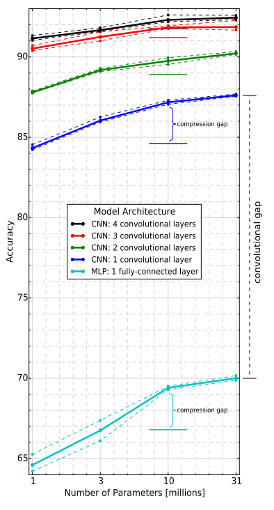
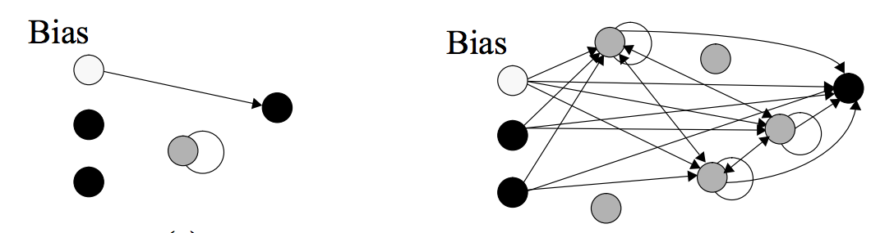
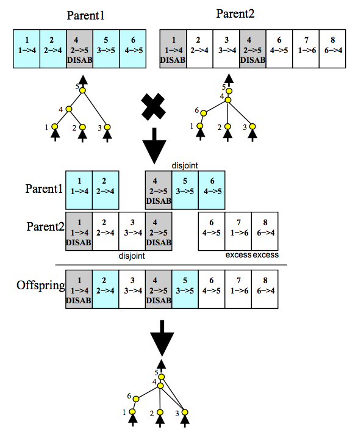
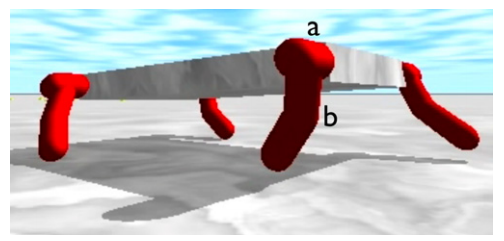
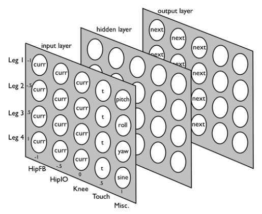
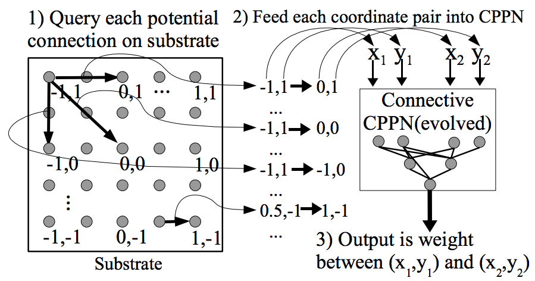
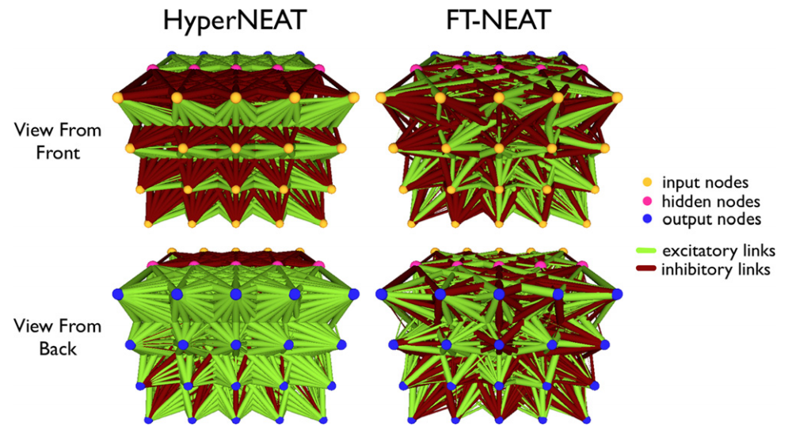

Introduction to Machine Learning and Data Mining
Kyle I S Harrington / kyle@eecs.tufts.edu
Some slides adapted from Geoff Hinton and David Touretzky
Linear Regression
Linear weighting of N-dimensional instances
$y = \vec{w} \cdot \vec{x} + b$
where $| \vec{x} | = N$, $b$ is the intecept, and $\vec{w}$ are real-valued weights.
Linearity Doesn't Add Up
Multiple layers of linear units do not improve performance
$\vec{y} = V * ( U * \vec{x} ) = ( V * U ) * \vec{x}$
The weights from both layers, U and V, are equivalent to a single layer, $W = V * U$
We suspect we need multiple layers to support higher-order interactions between inputs, what type of units would be better?
Activation Function
Activation function is applied sum of weighted inputs: $\sigma( \displaystyle \sum_i w_i x_i ) = y$

Logistic: $f(x) = \frac{1}{1+e^-x}, f(x)' = f(x) (1 - f(x))$
Alternatively hyperbolic tangent: $f(x) = tanh(x), f(x)' = \frac{1}{cosh(x)^2}$
Deep Networks
|
 |
Convolutional neural networks perform better at image labeling tasks (object detection) with greater depth. |
GNARL

Left, network on generation 1, and right, network on generation 765, for an example finite-state problem.
Angeline, P.J., Saunders, G.M. and Pollack, J.B., 1994. An evolutionary algorithm that constructs recurrent neural networks. Neural Networks, IEEE Transactions on, 5(1), pp.54-65.NeuroEvolution of Augmenting Topologies
|  |
|
Hyper-Neural Networks
Problem: Make a 4-legged robot walk as far/fast as possible
|  The robot. |
 The control NN. |
Hyper-Neural Networks
A hyper-neural network (HNN) takes coordinates for each weight in a network and returns the weight's value.
$HNN(N_{i},N_{o}) = w_{i,o}$, where $N_i$ and $N_o$ are in/out neurons
 Stanley, K.O., D'Ambrosio, D.B. and Gauci, J., 2009. A hypercube-based encoding for evolving large-scale neural networks. Artificial life, 15(2), pp.185-212.Hyper-Neural Networks
Left, weights are generated by a hyper-NN, and right, weights are optimized directly.
Clune, J., Stanley, K.O., Pennock, R.T. and Ofria, C., 2011. On the performance of indirect encoding across the continuum of regularity. Evolutionary Computation, IEEE Trans. on, 15(3), pp.346-367.